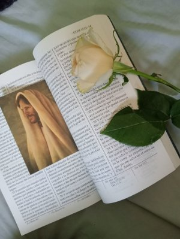

About This Journal
A place where faith meets words
Purpose
This spiritual journal was created to inspire people to reflect, record, and grow in their relationship with God. It is more than just a diary—it is a personal space to capture your thoughts, blessings, and impressions along your faith journey.
My Story
I started journaling during a time when I needed peace and clarity. Writing down my thoughts and spiritual impressions helped me see God’s hand in my life, recognize answered prayers, and feel gratitude even in difficult moments. This site is an invitation for you to experience the same blessings.
How to Use This Site
- Write your thoughts in the Journal page.
- Save your entries to reflect on them later.
- Use this as a safe and uplifting space for your spiritual growth.
“Write the vision, and make it plain upon tables, that he may run that readeth it.” — Habakkuk 2:2
Testimonies
Stories from people who used the journal.